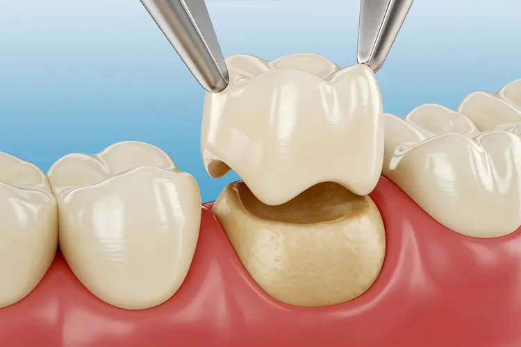

A cap made just for your tooth, your bite, and your jaw
A crown, also known as a "cap," is cemented onto an existing tooth and usually covers the portion above the gum line. Crowns can be made of porcelain, metal, or both — porcelain is most often preferred because it mimics the look and feel of natural teeth.
Your crown is fabricated away from your mouth by a dental laboratory, sculpted from an impression we take at Skyline Dental. That lets a technician examine every aspect of your bite and jaw movement, so once the crown is placed it functions like the rest of your natural teeth.
Why do I need a crown on my tooth?
Our patients at Skyline Dental have benefited from crowns for a variety of reasons, including:
- ✓ Protecting a weak tooth from breaking, or holding together parts of a cracked tooth
- ✓ Restoring a broken tooth or one that has been severely worn down
- ✓ Covering and supporting a tooth with a large filling when there isn't much tooth left
- ✓ Holding a dental bridge in place
- ✓ Covering misshapen or severely discolored teeth
- ✓ Covering a dental implant
- ✓ Making a cosmetic modification
Do you need a crown, or are you unsure if you do? Contact us and we'll schedule an appointment to evaluate your options.